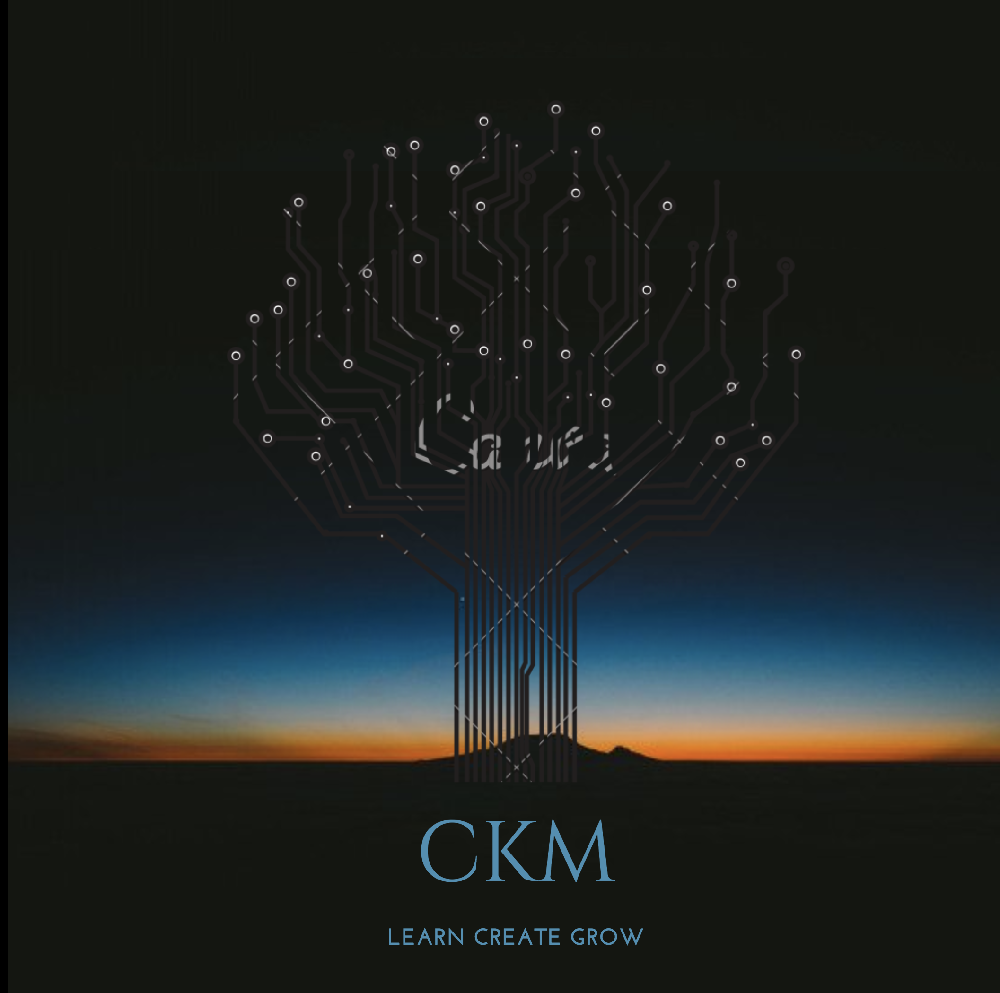

I am an aspiring Web Developer on a mission to learn, grow, and hone my skills.
My aim is to work with people to change, inspire and effect positive change in the world.
Follow my journey through the links above and I hope you'll find we can work together.
Currently based in Sydney Australia, but will move to where opportunity calls.
Available from September 2018 after completion of the Coder Academy bootcamp.
Currently developing skills in HTML, CSS, Ruby,
Ruby On Rails, JavaScript, Angular, NodeJS and ReactJS.
Bachelor of Science - University of Queensland.
Western Sydney University Leadership mentor program
Toastmasters communication and leadership training
Project management - Teaching - Financial analysis -
Microsoft office - Data extraction - Problem solving